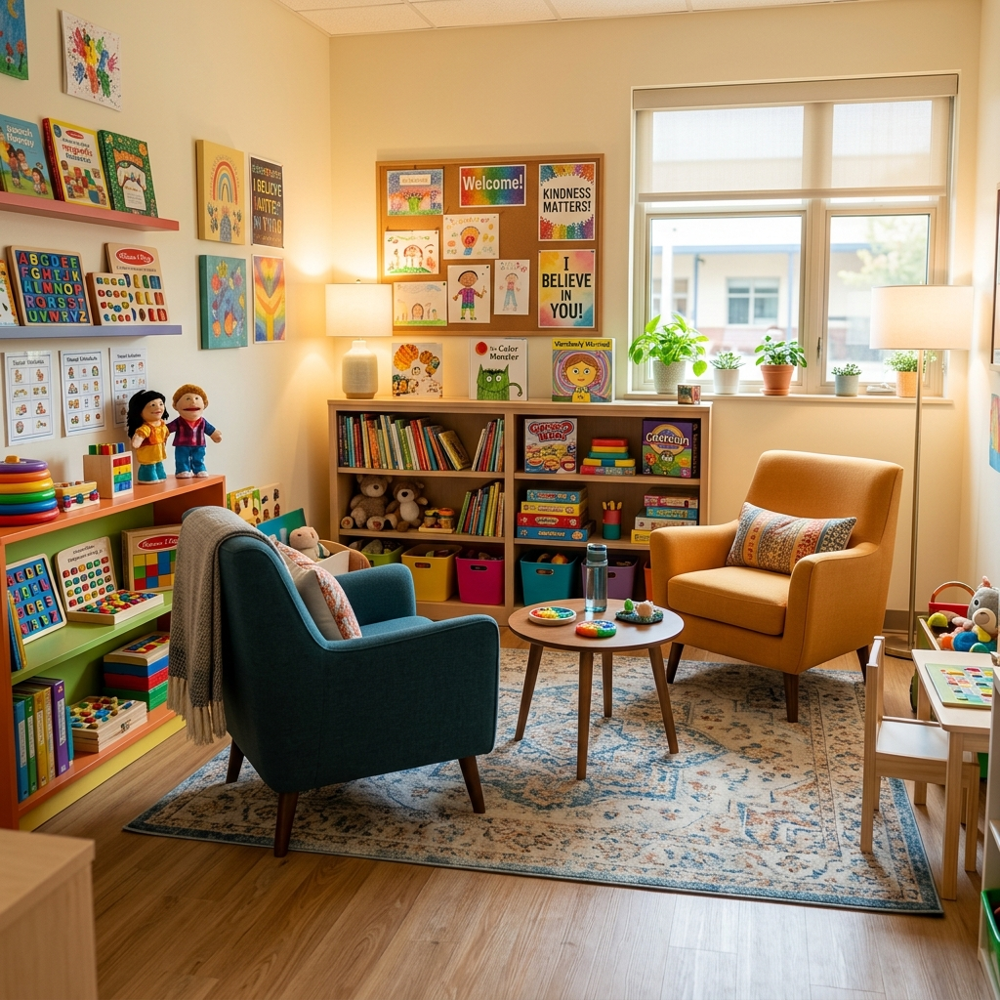

خلية الاستماع والمرافقة النفسية والتقويم النطقي لتجاوز صعوبات التعلم
حرصاً على سلامة وتوازن أبنائنا النفسي والسلوكي، تضع مدرسة المنار تحت تصرفكم خلية استماع ومتابعة متخصصة تحت إدارة خبيرة نفسانية مقيمة وأخصائية في تقويم النطق والتواصل. نهدف إلى تقديم الدعم المبكر لتجاوز صعوبات التعلم، قلق الامتحانات، وتعزيز الثقة بالنفس والاندماج الاجتماعي لدى جميع التلاميذ في بيئة تربوية دافئة وآمنة.
متابعة سرية وخاصة للتلاميذ لمساعدتهم في حل المشكلات النفسية والدراسية.
جلسات تقويم النطق واللغة ومعالجة صعوبات القراءة والكتابة.
لقاءات دورية مع الأولياء لمرافقة نمو وتكيف الأبناء داخل المنزل والمدرسة.
